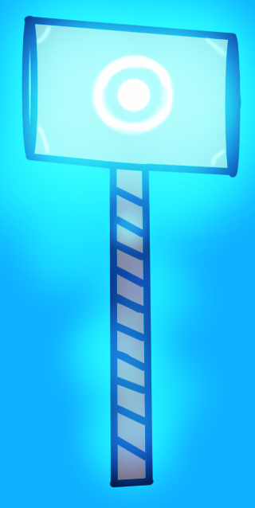

Hello, Welcome to the info page.
I started with this game as anyone else would have, from scratch. I did not know a single thing about this game, or what would happen in it. I started from nothing, but instead, just kept adding to it. eventually, the first one got released, after many bug fixes and updates, some of which were not on Gamejolt for long before I updated the game again, causing more bugs. this is when I thought of the holy hammer for Wes, one of the three main characters.
